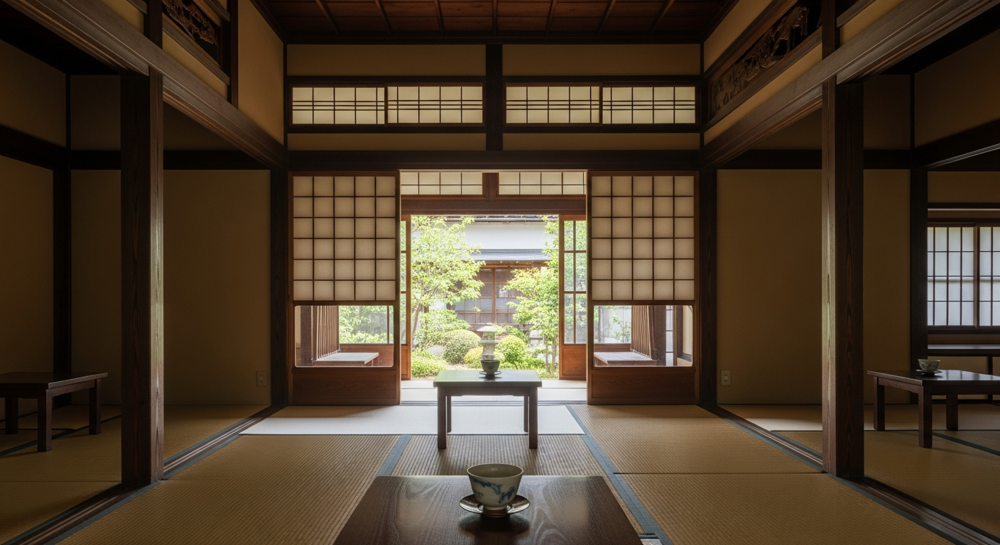
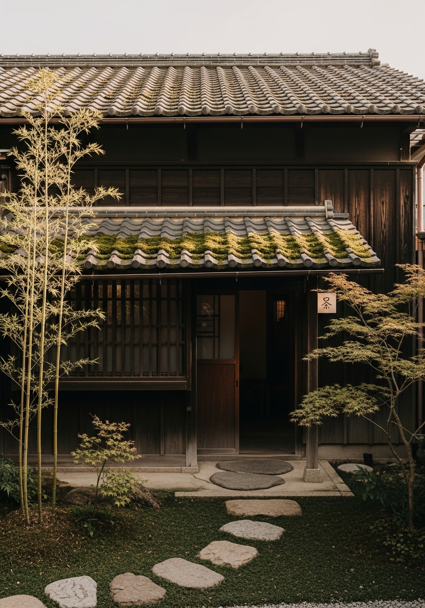
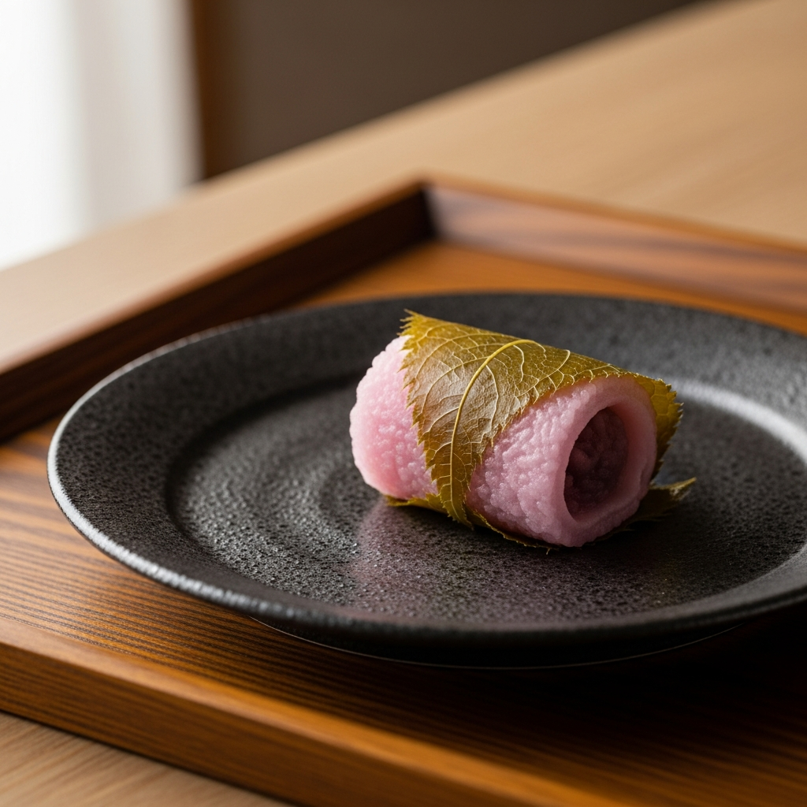

60
昭和の棟梁が組んだ梁。
磨き込まれた欅の柱。
障子越しに揺れる木漏れ日。
この空間は、なにも足さず、
ただ、時間の重なりを
そのまま残しています。
福岡・八女。
霧深い山間の茶畑から、
農家が直接届ける茶葉だけを使います。
茶道歴十五年の店主が、
その日の気温と湿度を見て、
一杯ずつ、点てます。
同じ味は、二度と出ません。

春は桜餅、夏は水羊羹、
秋は栗蒸し、冬は柚子餅。
近隣の和菓子職人が、
茶寮 凛のためだけに手がける
季節の一品。
お茶と和菓子、その組み合わせは
来るたびに変わります。
ここに来ると、スマホを見る気がなくなる。
それだけで、来た価値があると思った。
30代女性 -- 福岡市
お茶の味が毎回違うと聞いて半信半疑だったけど、
本当に違った。今日の一杯は、今日だけのもの。
40代男性 -- 糟屋郡
この静けさは、
明日にはもう、ないかもしれません。
完全予約制 -- 1日10組限定
LINEで予約する